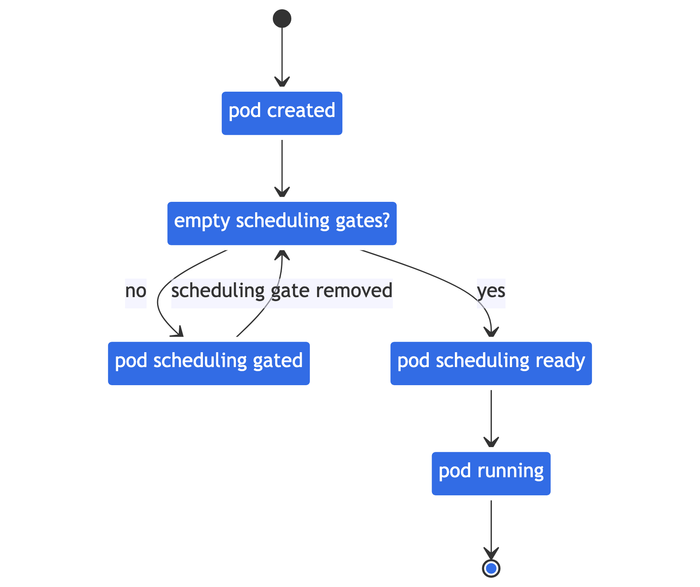

Feature state:
Stable since Kubernetes v1.30
Pods were considered ready for scheduling once created. Kubernetes scheduler does its due diligence to find nodes to place all pending Pods. However, in a real-world case, some Pods may stay in a "miss-essential-resources" state for a long period. These Pods actually churn the scheduler (and downstream integrators like Cluster AutoScaler) in an unnecessary manner.
By specifying/removing a Pod's .spec.schedulingGates,
you can control when a Pod is ready to be considered for scheduling.
Configuring Pod schedulingGates
The schedulingGates field contains a list of strings,
and each string literal is perceived as a criteria that Pod should be
satisfied before considered schedulable. This field can be initialized
only when a Pod is created (either by the client, or mutated during
admission). After creation, each schedulingGate can be removed in
arbitrary order, but addition of a new scheduling gate is
disallowed.

Usage example
To mark a Pod not-ready for scheduling, you can create it with one or more scheduling gates like this:
pods/pod-with-scheduling-gates.yaml
apiVersion: v1
kind: Pod
metadata:
name: test-pod
spec:
schedulingGates:
- name: example.com/foo
- name: example.com/bar
containers:
- name: pause
image: registry.k8s.io/pause:3.6After the Pod's creation, you can check its state using:
kubectl get pod test-podThe output reveals it's in SchedulingGated state:
NAME READY STATUS RESTARTS AGE
test-pod 0/1 SchedulingGated 0 7sYou can also check its schedulingGates field by
running:
kubectl get pod test-pod -o jsonpath='{.spec.schedulingGates}'The output is:
[{"name":"example.com/foo"},{"name":"example.com/bar"}]To inform scheduler this Pod is ready for scheduling, you can remove
its schedulingGates entirely by reapplying a modified
manifest:
pods/pod-without-scheduling-gates.yaml
apiVersion: v1
kind: Pod
metadata:
name: test-pod
spec:
containers:
- name: pause
image: registry.k8s.io/pause:3.6You can check if the schedulingGates is cleared by
running:
kubectl get pod test-pod -o jsonpath='{.spec.schedulingGates}'The output is expected to be empty. And you can check its latest status by running:
kubectl get pod test-pod -o wideGiven the test-pod doesn't request any CPU/memory resources, it's
expected that this Pod's state get transited from previous
SchedulingGated to Running:
NAME READY STATUS RESTARTS AGE IP NODE
test-pod 1/1 Running 0 15s 10.0.0.4 node-2Observability
The metric scheduler_pending_pods comes with a new label
"gated" to distinguish whether a Pod has been tried
scheduling but claimed as unschedulable, or explicitly marked as not
ready for scheduling. You can use
scheduler_pending_pods{queue="gated"} to check the metric
result.
Mutable Pod scheduling directives
You can mutate scheduling directives of Pods while they have scheduling gates, with certain constraints. At a high level, you can only tighten the scheduling directives of a Pod. In other words, the updated directives would cause the Pods to only be able to be scheduled on a subset of the nodes that it would previously match. More concretely, the rules for updating a Pod's scheduling directives are as follows:
For
.spec.nodeSelector, only additions are allowed. If absent, it will be allowed to be set.For
spec.affinity.nodeAffinity, if nil, then setting anything is allowed.If
NodeSelectorTermswas empty, it will be allowed to be set. If not empty, then only additions ofNodeSelectorRequirementstomatchExpressionsorfieldExpressionsare allowed, and no changes to existingmatchExpressionsandfieldExpressionswill be allowed. This is because the terms in.requiredDuringSchedulingIgnoredDuringExecution.NodeSelectorTerms, are ORed while the expressions innodeSelectorTerms[].matchExpressionsandnodeSelectorTerms[].fieldExpressionsare ANDed.For
.preferredDuringSchedulingIgnoredDuringExecution, all updates are allowed. This is because preferred terms are not authoritative, and so policy controllers don't validate those terms.
What's next
- Read the PodSchedulingReadiness KEP for more details